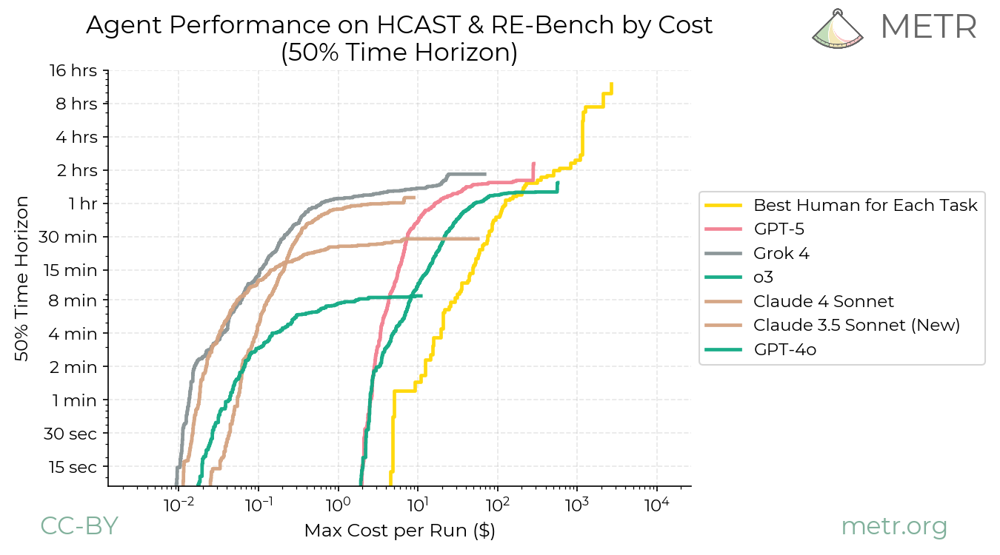

AI coding capabilities are becoming cheaper
Introduction
In late 2025, Toby Ord argued in a blog post that there is a positive correlation between a model’s capabilities and its “minimal hourly cost.” On this view, the cost of solving a task with an LLM-based coding agent may increase supra-linearly with task duration.
This matters because Ord’s interpretation, if correct, would have important implications for how we think about the economics of increasingly capable AI systems. Yet the significance of the pattern is not obvious. It could indicate a general structural connection between capability and cost, under which increasingly capable models become disproportionately expensive to use on longer tasks. But it could also reflect contingent features of METR’s evaluations and of the current model market. The question, then, is how the observed relationship should actually be interpreted.
I argue that it should not be read too quickly as evidence that achieving higher levels of model capability systematically requires supra-linear increases in cost. The essay proceeds in four steps. First, it clarifies the definition of “minimal hourly cost” in the context of METR’s time-horizon evaluations. Second, it argues that raw capability is not the same as capability per dollar, and explains how this difference reflects the objectives for which frontier models are trained. Third, it shows that the set of models in METR’s evaluations is biased, making broad generalizations from the observed relationship hazardous. Fourth, it argues that, holding capability constant, prices are decreasing rather than increasing. Together, these points suggest that although new capability thresholds may first be crossed by models with higher hourly costs, the cost of reaching any given capability level is falling.
From Time Horizons to Hourly Cost
METR evaluates models in a simple agentic harness with a maximum token budget X, chosen so that performance has roughly plateaued. This lets METR estimate performance quantities such as the 50% and 80% time horizons, following the procedure described in METR’s write-up on time horizons.
It is worth noting that the standard 50% time horizon is budget-independent: it is intended to measure the raw capabilities of a model rather than its capabilities at a particular budget constraint.
That said, one can define a budget-conditioned version of the 50% time horizon. Fix a budget x < X, and treat every run whose generation cost exceeds x as a failure. One can now estimate the model’s 50% time horizon at budget x. Repeating this process for many values of x produces the family of curves shown below.

We can now define the hourly cost for tasks of duration T as
c(T) = x(T) / T × 60
where T is measured in minutes, and x(T) denotes the token budget at which the model’s budget-conditioned 50% time horizon equals T. The model’s “minimal hourly cost,” or Toby Ord's “sweet spot”, is the minimum value of c(T) across task durations.
Why Highly Capable Models Can Still Be Inefficient
Now that we have properly defined the "minimal hourly cost", it is worth noting that it is a measure of efficiency and not raw capabilities. Raw capabilities refer to what a language model can do in absolute terms. This should not be confused with efficiency, that refers to how much useful performance is obtained per token. A model may be highly capable yet require many tokens to reach a good answer. In that sense, raw capability describes the model’s ceiling of competence, not the economy with which that competence is expressed.
This distinction matters because frontier labs are often trying first and foremost to maximize capability. Given tight timelines and strong competitive pressure, this can easily lead to models that push the capability frontier without being optimized for efficiency. From that perspective, high cost at the frontier may simply reflect a focus on pushing absolute performance rather than optimizing performance per token.
There are several reasons why organizations may rationally prioritize raw capability over immediate efficiency. Most obviously, the most capable model attracts attention, prestige, and strategic value: the organization that releases the leading system often becomes the focal point of public and industry attention, and that visibility can have important downstream consequences. At the same time, raw capability is frequently reusable. The capabilities of a frontier model can later be transferred into cheaper systems through distillation into smaller models, through additional training phases that reward concision or efficiency, or through the generation of synthetic data for training stronger future base models. In this sense, even a model that is inefficient at release may still be highly valuable as an intermediate technological artifact. It is therefore not anomalous that the first model to establish a new capability frontier may display a relatively poor capabilities-per-dollar ratio, since the incentives facing frontier labs often make such an outcome entirely rational.
What METR Measures and What It May Miss
METR is measuring whether and when AI systems might threaten catastrophic harm to society, primarily through its task-completion time horizon, which measures the length of tasks that models can complete with 50% and 80% success rates. To estimate this, METR equips each model with a budget large enough to allow extensive search over possible solutions. As a result, the budget-independent 50% time horizon primarily captures raw capability, rather than capability per token or capability per dollar.
This brings us to what I think is the central issue: the set of models evaluated by METR is not a random sample of all models with a given capability level. Because evaluations are expensive, METR assesses only the most capable model available at any given time.
Once a frontier model is released and evaluated by METR, later models trained with better algorithms, better data, or more efficient software achieving similar performance at much lower cost don't receive the same level of public attention and are less likely to be evaluated by METR. As a result, models with high capabilities-per-dollar ratios may be systematically underrepresented in the set of models used to infer the relationship between capability and minimal hourly cost.
At constant capability, price is decreasing
Estimating Minimal Hourly Cost for more models
Toby Ord’s analysis relies on data from the METR GPT-5 report. Only a small subset of the models METR has evaluated is included in this report. Ideally, we would like to replicate the results of the report and add all models ever evaluated by METR.
Unfortunately, METR does not provide access to per-task costs for all evaluated models. But we do have access to token_counts, and using the same technique described in Anders Cairns Woodruff's post, we can infer an estimated generation cost from API prices. This estimation is imperfect because we do not know exactly what token_counts measures, whether it includes both input and output tokens, or what the proportion of each is. In addition, it is unclear whether the generation cost used in the METR report is based on official API prices, so our estimated cost of generation may differ from their cost of generation.
Time Horizon 1.1 (Current)
$
Models
Budget-conditioned 50% time horizon
Each line is one model’s budget-conditioned 50% time horizon curve. The x-axis can be shown either as allowed per-run budget in dollars or as the corresponding token count, while the y-axis is the resulting 50% time horizon. Both axes use logarithmic spacing, matching the METR-style plot. Use the controls above to switch between TH 1.0 and TH 1.1, between dollars and tokens, and to choose which models to display.
Note: the data Ord’s analysis relies on are now deprecated. They come from Time Horizon 1.0 rather than Time Horizon 1.1, which was released in January 2026.
When we examine the models included in the GPT-5 Report used for Ord’s analysis, we still find that the minimum hourly cost rises for newer, more capable models. However, because our estimate of generation cost behaves strangely for short tasks, focusing on the minimum hourly cost may be less informative than examining the hourly cost at durations where the estimates behave as expected.
When we include the additional models in the analysis, the original trend no longer appears to hold. At the same time, the expanded set still consists almost entirely of frontier models from OpenAI and Anthropic, plus one model from Google, rather than a broad sample of low-cost models. This raises the possibility that extending the analysis to a wider range of models, including Chinese open-source models, would reveal an even clearer pattern in the opposite direction. Finally, because our cost estimates are inferred from token counts and API pricing, they are necessarily approximate. It would therefore be valuable to revisit this question using more reliable cost data across a much broader set of models.
One can also view the same budget-conditioned time horizon curves in token space rather than dollar space. On that representation, the overall picture is similar: the more capable models, which achieve longer time horizons, generally appear to require fewer tokens per hour of capability than older models whose performance is concentrated on shorter tasks. In other words, even when we abstract away from pricing and look only at token expenditure, the frontier does not obviously look less efficient. If anything, the token-conditioned view suggests that capability improvements have often been accompanied by reductions in the number of tokens needed to sustain a given level of task performance.
Suggestive Evidence from RE-Bench
RE-Bench provides some suggestive evidence in the same direction. RE-Bench is part of METR’s broader evaluation framework and includes a large set of models. Although RE-Bench alone does not provide enough information to estimate full 50% time horizons or infer minimal hourly costs for every model, it does provide average cost and average tokens per problem.
This allows us to examine the evolution of the average cost per problem among classes of models that reach a given capability threshold. The graph below uses RE-Bench data and plots cost per problem against model release date for models whose resolved rate exceeds a chosen threshold, where a model’s resolved rate is the percentage of benchmark problems it successfully solves.
Models
Cost per problem for models above a 50% resolved-rate threshold
Resolved rate threshold
Points show selected models whose resolved rate is strictly above the chosen threshold. Hover points for details. The highlighted frontier marks the cheapest selected model available so far at each date. The x-axis and y-axis ranges are fixed across selections to keep visual comparisons stable.
On this measure, the pattern runs in the opposite direction from the one emphasized in Ord’s analysis: once we look beyond a small set of frontier models, the cost of reaching a given capability level appears to fall rather than rise with model release date. If models with the same resolved rate tend, on average, to succeed and fail on similar kinds of tasks, and if longer tasks are generally harder and therefore have lower success rates, then a fixed resolved-rate threshold can be treated as a rough proxy for a fixed time horizon. Under those assumptions, the RE-Bench data suggest not only that later models are cheaper at a given capability level, but also that the hourly cost of that capability is likely decreasing over time. It could still be true that some frontier models that first unlock new capability levels have unusually high hourly costs, but the data from RE-Bench and my estimatons from METR suggest that those initial frontier costs are outweighed by the later price reductions produced by more efficient follow-up models.
Conclusion
Ord’s analysis identifies a real empirical pattern in METR’s evaluated data: among the prominent frontier models included in the GPT-5 report, more capable models tend also to have higher minimal hourly costs. If that relationship were to persist, it would imply that increasingly capable models could eventually become more expensive per hour than human labor on long tasks.
However, this pattern should be interpreted carefully. The evaluated models should not be treated as a random or representative sample of all models. They are a small, highly selected set of visible frontier systems produced by organizations primarily optimizing for maximum raw performance. As a result, the observed relationship may reflect the priorities of frontier labs and the composition of the public benchmark set as much as any deeper economic tendency.
This makes it risky to infer from METR’s benchmark that higher capability is inherently becoming more expensive. A more plausible interpretation is that the first models to reach a new capability frontier are often expensive because they are optimized for peak capability rather than cost-efficiency. Later, more efficient follow-up models may achieve similar capability at lower cost, while receiving less public attention and being less likely to appear in widely discussed evaluations.
METR therefore seems better understood as measuring raw capability under generous budgets than as measuring capability per dollar. Under that interpretation, the benchmark can reveal something real about frontier-model economics at the moment of release, without showing that the long-run economics of useful AI are worsening. The strongest conclusion supported by the evidence is not that capability itself is becoming durably more costly, but that frontier capability is often expensive at first, even though the cost of achieving that same capability level may still decline over time as the broader ecosystem catches up.